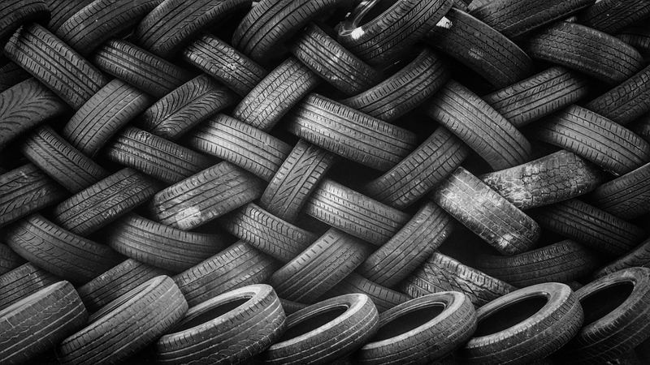
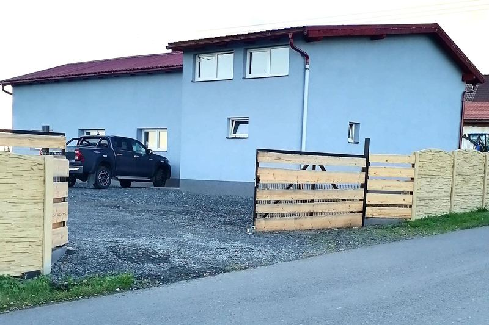

Pneuservis osobních aut
Přezutí, vyvážení, opravy defektů.
Dušan Janecký, Fulnek-Kostelec. Pneuservis a servis osobních i nákladních automobilů. Otevřeno každý den od 8 do 17.
Každý den 8–17

Vyberte vůz. Ukážeme, kolik kol přezouváme, a rovnou si můžete objednat termín.
4 kola k přezutí
Objednat termín
Přezutí, vyvážení, opravy defektů.

Kamiony, tahače i dodávky.

Servis a opravy osobních i nákladních vozů.
4,5 z 5
hodnocení zákazníků na Firmy.cz